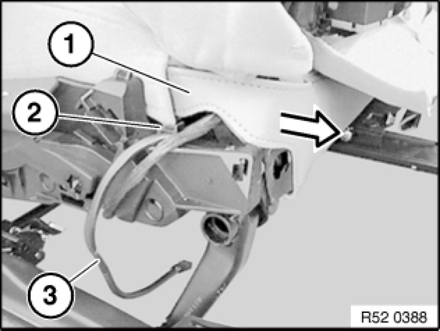
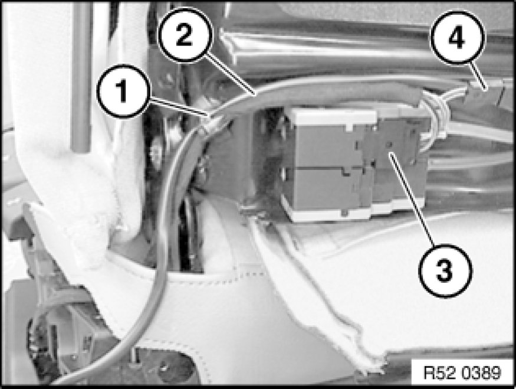
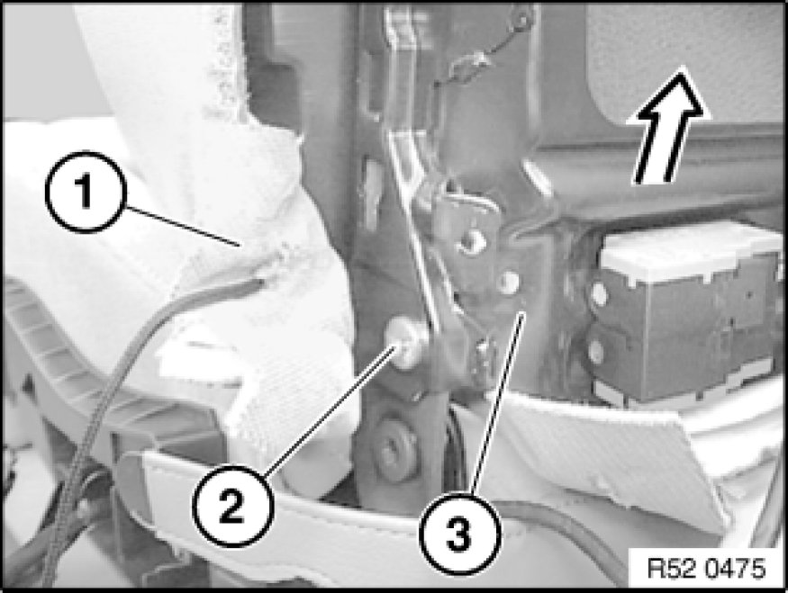
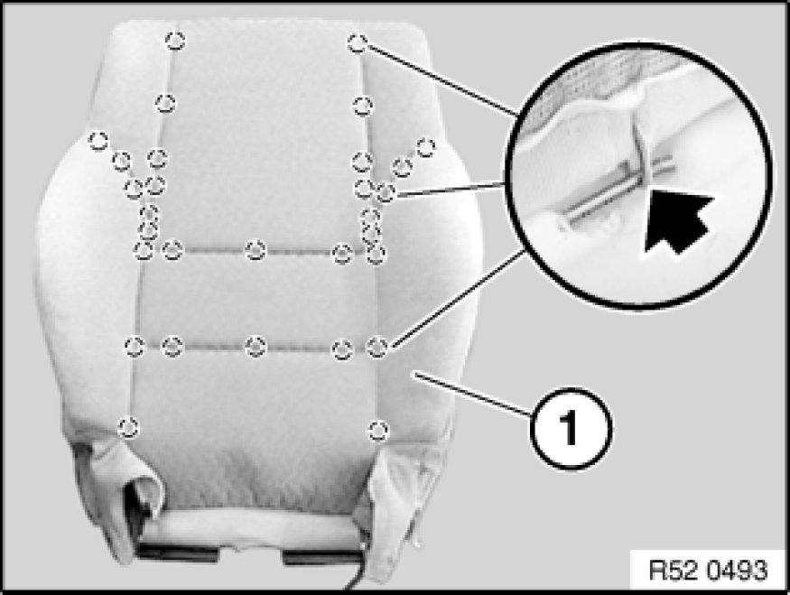
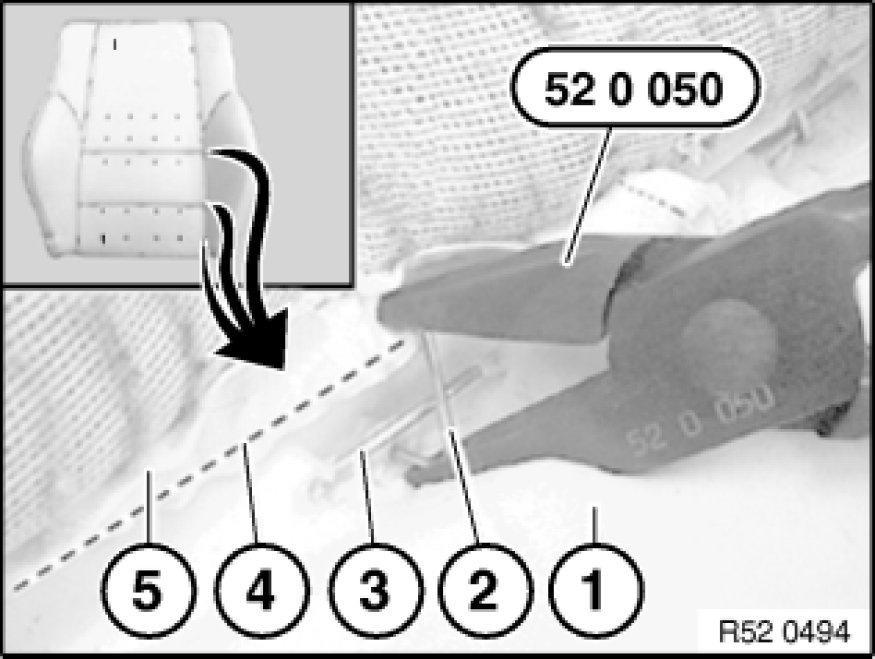
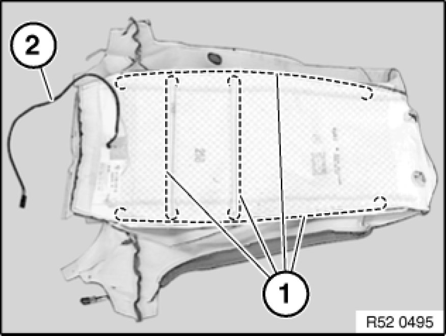

Replacing Backrest Cover on Front Left or Right Seat (Sports/Electric)
52 16 405 - Replacing backrest cover on front left or right seat (sports/electric)
Remove rear panel from front seat backrest,
refer to 52 15 198. Removing and Installing/Replacing Rear Panel on Front Left or Right Seat Backrest (Sports/Manual)
Detach backrest cover (1) from backrest frame (2).
Unhook ends of tensioning cord (1) from backrest frame (2).
Installation:
Pass tensioning cord (1) with backrest cover (3) on left/right round clip mount (2).
Hook ends of tensioning cord to backrest frame,
refer to previous work step.
Installation instruction for backrest width adjustment:
Lay tension cables (1...2) underneath hoses (3) and cables (4).

Exposing cable for seat heating on version with seat heating only:
Removing outer cover on front seat:
Manual controls, refer to 52 13 040. Removing and Installing/Replacing Outer Cover on Left or Right Front Seat Back-Rest (Normal/Manual)
Electrical controls, refer to 52 16 040. Removing and Installing/Replacing Outer Covers on Left or Right Front Seat (Sports/Electric)
Unfasten plug connection (1).
Pull cable (2) out of holder (3).

Model with seat heating only:
Pull out tongue (1).
Pull cable (2) out of holder (3).

Model with seat heating only:
Lift out Omega clip (1).
Pull out cable (2) from Omega clip (1).
Model with lumbar supports:
If necessary, disconnect plug connections (3) and (4).
Lift out Omega clip (1).

Removal or replacement of backrest frame only:
Caution!
Do not under any circumstances turn screw underneath screw (2), this would destroy the seat frame.
Press backrest cover (1) to one side and release screw (2) on left/right.
Detach backrest frame (3) with backrest cover upwards.
Installation:
Replace screws (2) (microencapsulation).
Tightening torque,
refer to Technical Data 52 10 2AZ. [1][2]Seats

Note:
The work for "Removing complete backrest" ends here.
Removal of backrest cover with padding or replacement of backrest frame only:
Remove both guides for head restraint at front,
refer to 52 13 ... Removing and Installing/Replacing Guide for Front Left or Right Head Restraint

Version with lumbar support only:
Disconnect hoses (2) and (3) from valve housing (1).
Note:
If necessary, gently heat air hose when firmly seated.
Valve housing must not be unclipped: leakage. If the valve housing is unclipped, release screw and clip valve housing together.
2 - Hose (blue), top cushion
3 - Hose (red), bottom cushion

Note:
For purposes of clarity, shown here without valve housing.
Installation:
Observe cable guide (1) for backrest heating.
Lay air hoses (2) without kinks through hole (3).
Version with lumbar support and backrest width adjustment only:
Detach hoses (1) and (2) at cutting line (heat with hot air blower if necessary).
1 - Hose (blue) upper cushion (lumbar support)
2 - Hose (red) lower cushion (lumbar support)
3 - Hose (white) right cushion (backrest width adjustment)
4 - Hose (white) left cushion (backrest width adjustment)
5 - Motor pump unit

Detach backrest cover (1) at sides towards front and remove with support upwards from backrest frame (2).
Note:
The work for "Removing backrest cover with padding" ends here.
Removal of backrest cover from padding, replacing padding:
Release retainers (1) on left/right of backrest cover (2).
Note:
Support (3) is reinforced in this area.
Note routing of tensioning strap (4).

First detach clips (1).
Fold back piping (2) with backrest cover (3).

Detach all remaining clips.
Remove backrest cover (1) from padding.
Remove all remnants of retainers from backrest cover (1) and padding.

Installation:
Fold in new clip (2) with special tool 52 0 050.
1. Support
2. Retainer
3. Trim thread in support
4. Trim wire in backrest cover
5. Backrest cover
Note:
The work for "Replacing padding" ends here.

Replacement of backrest cover:
Pull trim threads (1) out of backrest cover.
Cut new backrest cover to size and insert trim threads (1).
2 - Seat heater cable